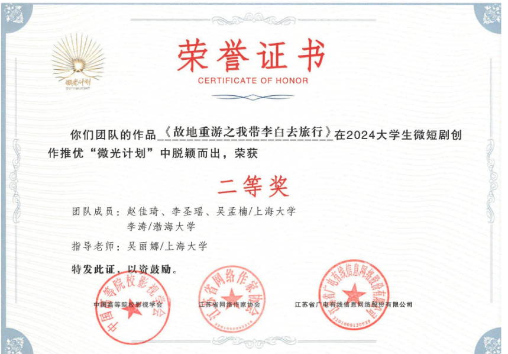

《故地重游之跟着李白去旅行》
类型：文旅、传统文化、穿越
故事梗概
故事的主人公是高二学生李浩然和弟弟李白天，两人在班级中成绩倒数。在一节语文课上，兄弟俩都在溜号，被语文老师训斥后，弟弟李白天一改往日呆呆傻傻的模样，用古人说话方式与老师辩解，还就诗人李白的知识与老师展开问答，出人意料地全部答对。老师气不过，要叫家长并给兄弟俩停课处分。李白天发出 “扬天大笑出门去，我辈岂是蓬蒿人” 的狂言后，家长被叫来，两人灰溜溜站在走廊等待处理。李白天告诉李浩然自己是李白，把李浩然当成了 “浩然兄”（孟浩然）。李浩然担心弟弟，答应陪李白体验新世界生活。他们同游上海，感受新时代大都市的流光溢彩。期间，李浩然收到介绍江苏几座城市的宣传单，李白提出喝酒，两人虽是未成年，但在店员面前上演拙劣戏码后买到了酒。推杯换盏间，他们首次谈到核心主题：成功的定义是什么？李浩然想开面包店过简单幸福生活，不知这算不算成功；李白一生致力于入仕途却以诗人留名青史，也不知这非所愿的一生是否成功。
第二天，李浩然发现自己在喝多后签下陪李白重游三地的 “军令状”。经过几轮博弈，他败下阵来，与李白一同前往扬州。他们重游栖灵塔景区，李白讲述当年散尽千金救济他人的故事。晚上留宿青莲巷，李白吟诵《静夜思》。次日，在去瓜洲运河的路上搭到黑车，逃跑时被大汉围住，身为剑客的李白虽挺身而出，给出的方法却是逃跑。几经波折后到达瓜州运河，李白吹嘘自己眼光好，讲述看好这里的原因。惜别扬州时，李白念出《留别广陵诸公》，李浩然也明白了成功不一定是大众所走之路。
到达南京后，两人因去哪个景点拌嘴，在巷子里的饭馆赌气点菜，结账时发现包落在车站。老板娘以为他们吃霸王餐，叫伙计围住他们。李白这次没跑，以一敌十被胖揍一顿，却紧紧护住李浩然。被罚刷盘子后，两人坐在秦淮河边，李浩然给李白擦伤口，二人冰释前嫌，喝起李浩然在苏州偷偷为李白准备的菊花酒。
找回包后，他们发现经费所剩无几，就搭乘着大爷的三轮蹦蹦车去劳劳亭。李白念起《劳劳亭歌》，解释此诗原本感叹孤独寂寞、无人赏识，如今觉得当时过于悲观。李浩然提出找人赏识，两人买笔墨在劳劳亭题诗赚钱，生意火爆。收工后准备去秦淮河犒劳自己。
晚上在秦淮河，李白对舞台上的姑娘一见钟情，却在姑娘询问时否认是来找她。李浩然鼓励李白去了解姑娘，李白却明白自己不能与她厮守一生。他们去凤凰台散心，再次讨论成功的定义并加上历史因素，二人讨论达到高度共鸣。李白高声诵读《登金陵凤凰台》，热泪盈眶，两人抱头痛哭。
最后，李白与李浩然在弄堂道别。李白感谢李浩然，称他为 “跨时代知己”，李浩然也赞美李白。李白明白了成功是激励失意之人，李浩然明白了实现小理想也是成功，要勇于面对自己的需求。道别时，李白说未来会回来尝蛋糕。多年后，李浩然开了蛋糕店，一位着紫衣、染紫发的男子走进店，“浩然兄，我来讨块糕点吃吃。
创作阐述
本剧以跨时空奇幻相遇为创意核心，讲述成绩倒数的高二学生李浩然，与意外附身于其弟弟李白天的诗仙李白，因一场课堂闹剧开启一段从上海到扬州、苏州、南京的奇幻旅行，全剧以青春轻喜剧为外在风格，融合传统文化与现代生活反差笑点，通过李白重游故地、与李浩然一路相伴同行的经历，层层深入探讨成功的定义、理想与现实的和解、自我价值认同这一核心主题，既打破大众对李白高冷诗仙的刻板印象，赋予其好奇鲜活、嘴硬心软的烟火气，也塑造出淡泊内敛、心怀面包店小理想的普通少年李浩然形象，两人形成跨时代知己，在旅途的欢笑、争执、互助与治愈中，李白从执着于仕途报国却以诗成名的人生困惑中走出，领悟以诗文慰藉世人、激励失意者便是真正的成功，李浩然也摆脱对平凡理想的自我怀疑，坚定实现小梦想同样可贵的信念，最终完成彼此救赎与双向成长，本剧兼具轻松娱乐性与深刻思想性，将李白诗词、地域文化与当代青少年的成长焦虑、成功观重塑相结合，旨在以温暖治愈的叙事，打破单一功利化的成功标准，传递忠于内心、接纳自我、平凡亦有光芒的正向价值观，让传统文化在年轻化表达中焕发新的生命力。
《故地重游之我带李白出去玩》不是简单的穿越搞笑短剧，而是以奇幻为壳、以成长为核、以文化为魂的青春治愈作品。我们用李白的千年困惑，映照当代少年的青春迷茫；当下青少年常被 “唯成绩、唯功利” 的单一成功观裹挟，主角李浩然想做面包师的平凡理想、李白想入仕途却以诗成名的人生遗憾，形成跨时代的精神共鸣。我们希望通过这段奇幻旅行，告诉观众：成功没有标准答案，忠于内心、实现自我价值、温暖他人，就是最珍贵的成功。用一段轻松的旅行，完成一场关于自我、理想与成功的深度对话。
获奖证书

4.人物小传
李浩然：男，17岁；一个性格内敛与世无争的男孩，但在熟人面前会变得更开朗爱说爱闹；博览群书但却对课程书本内容毫无兴趣，每次都故意考班级的倒数第二；疼爱自己的弟弟李白天；梦想是毕业了去学西点，将来开一家自己的蛋糕房，烹饪美味的蛋糕；对成功的定义有自己的看法，认为普通人能实现心中的小理想也是一种成功；该人物性格中淡泊超然的部分对标的是诗人孟浩然（李白挚友）。
李白天：男，17岁；原主性格开朗，但始终不被父母认可所以极依赖哥哥。
李白：男，（762年—距今）；性格豪迈张扬，为人仗义，思维敏捷，鬼点子多，但始终把家国抱负放在首位；自从离世后留存在人间一缕魂，人物首要目的是寻找一个机会能够作为人的实体感受新世界的各种事物，深层目的是对个人认知的不清晰，认为自己理想本该是入仕途、卫国家，但没想到最后留名青史的的李白是一位伟大的诗人，与理想中的李白截然相反，他困惑于自己的一生究竟是成功还是失败的，他想找到答案。【由于剧中附身在李白天身上，所以以李白天的人物形象出现】
5.完整剧本
《故地重游之我带李白出去玩》
第一集：
【场景一：高中教室，早上|内；语文老师在讲台上讲考试卷子，情绪上比较激动，同学们都认真的在听讲；李浩然和弟弟李白天坐在靠窗的最后一排，李浩然也沉默的低着头看一卷子，然后溜号看向窗外，带着蓝牙耳机听歌，完全不注意课堂情况；李白天趴在桌上睡觉】
语文老师：这首《将进酒》是唐代著名浪漫主义诗人李白沿用乐府古题创作的一首七言歌行。此诗思想内容非常深沉——
【语文老师在黑板上刚讲完一道题，写完粉笔字一回头扫视，发现李白天在睡觉】
语文老师：这首诗非常重要，是高频考点，需要大家通篇背诵。大家先读一遍。
【语文老师一边讲课，一边从讲台上走下来，默默地移到李浩然和白天的身后】
众学生：君不见黄河之水天上来，奔流到海不复回。君不见高堂明镜悲白发，朝如青丝暮成雪。人生得意须尽欢，莫使金樽空对月。
【老师已经走到了二人身后，盯着睡得正香直吧唧嘴的李白天】
李白天：【含糊不清小声的】快喝呀，
语文老师：再给你倒上一杯吧。
李白天：好啊好啊，来酒来酒
众学生：天生我材必有用，千金散尽还复来。烹羊宰牛且为乐，会须一饮三百杯。
【李白天突然像梦游一样，听到这句诗以后猛地站起来，大声地叫喊】
李白天：岑夫子，元旦丘！你们都不许放下酒杯！快给我喝，哈哈哈哈哈哈【摇摇摆摆，一屁股坐下继续睡】
【李浩然注意到旁边的动静，一回头看到语文老师一脸愤怒的盯着李白天，看到李浩然回头的一瞬间也愤怒的剜了他一眼】
语文老师：你们俩都给我站起来。
【李浩然先反应过来一下子站起来，然后提着李白天的脖领子也把李白天拽了起来，这个时候李白天迷迷糊糊地转醒】
语文老师：这课我真的上不了了！【一边说一便走到讲台】你们两个学明白了是吧，已经不用听讲了！
【李白天疑惑的看着周围环境，看了一眼正低头的孟浩然，老师的教训声音像被屏蔽掉一样】
语文老师：【拿起文件夹里的成绩单】哟，一个第一、一个第二，成绩不错啊，可惜是倒数的。
【李白天惊喜的看了看自己的手，又摸了摸自己的脸，狠狠地拧了一把，疼的呲牙咧嘴】
李白天：成了【惊喜、小声地说】
语文老师：李浩然，李白天，你们兄弟俩解释解释吧！
李浩然：老师我们——
【李浩然刚想认错，就看到李白天喜上眉梢的走到了老师所在的讲台旁，鞠了一礼；众学生和老师都被这一幕惊到了】
李白天：您应该是夫子吧，还是一位女夫子，真是不多见。左传曾言：人非圣贤孰能无过？我和浩然兄无意冒犯您，您消消火。火大伤身啊。
【老师被他的话震惊到，一时没说出话】
语文老师：你是在捉弄我吗？
李白天：绝无此意！【再鞠一躬】只是学生疑惑，这诗实在算不上顶好的作品，说的难听一点，这不就是公然耍酒疯呢吗？
【众学生看到李白天连连鞠礼的样子，在下面窃窃私语，偷偷笑起来】
语文老师：什么意思？你这是不尊重经典！
李白天：学生实话实说罢了。
语文老师：你了解这首诗吗？你明白李白蕴藏在诗中的情感吗？
李白天：世间再无人比我更了解他了【停顿一下，看着李浩然】除了浩然兄。
语文老师：狂妄！李白天你以为名字里带李白你就真成了李白了？我看你不该叫李白天你应该叫李白痴！
李白天：我说的是真是假，夫子一试便知。
【语文老师冷笑，不相信李白天的话】
语文老师：【冷笑】好，那我就考考你！你要是答不上来，就不要再上我的课了。
第二集：
李浩然：你干什么？你别发疯了。
【李白天自信的摆摆手示意李浩然不要担心他】
【语文老师翻开自己的教案，尖锐快速的提问】
语文老师：“人游月边去”下一句是？
李白天：舟——在空中行
语文老师：黄金白璧买歌笑
李白天：一醉累月轻王侯。
语文老师：畴昔雄豪如梦里【语速加快】
李白天：相逢且欲醉春晖【不急不缓的背诵出】赠郭将军！
语文老师：李白的好友是谁？
李白天：那可太多了！听我慢慢数来！知遇之恩贺知章；知心好友元旦丘；过命之交郭子仪；【突然不好意思的笑笑】铁杆粉丝杜子美，这么数十个手指头都掰不过来，不过还有一位极为重要的朋友必须要提，芝兰之交孟浩然【看着李浩然说】
【众同学起哄】
语文老师：最后一题，李白曾投奔了在当涂做县令的族叔，请问族叔的名字是什么？
同学甲：听都没听说过。
同学乙：这太难了
李白天：族叔，李冰阳
语文老师：还没完呢？在哪一年？
【全班屏气凝神，李白天低头沉思】
李白天：上元二年，那年病的厉害，亏得族叔收留，才没有流落街头。夫子，学生是否答对了？
【老师一对照答案，震惊的发现说对了】
语文老师：都对了。
【班级再次霎时安静，然后响起掌声】
李白天：夫子刚才称我为白痴，我虽不知是何意思，但估摸着不像什么好词，您是不是该给我道个歉呢？
【众学生们开始起哄】
语文老师：你，你这样的学生我教不了！我现在就给你父母打电话！【愤怒】
李白天：哼，此处不留我，自有留爷处！我这就告辞！浩然兄，走！【拉着李浩然就要出门】
李浩然：你是疯了吗？
【两个人走出教室门刚关上，众人正震惊地盯着门口还未回神，就见李白天又重回教室，站在门口，面向众人，把门关上】
李白天：刚才忘记说词了。重来一遍。
【李白天作势要走出去，先向前大摇大摆走两步，踹开教室门，站定】
李白天：仰天大笑出门去，我辈岂是蓬蒿人！哈哈哈哈哈哈哈
【李白天的笑声回荡在整个走廊；教室内的众人集体石化，门外的李浩然也石化了；李白天走的有一段距离以后李浩然突然清醒过来】
李浩然：对不起老师。
【李浩然赶紧用袖子把李白天踹的鞋印擦干净去追李白天】
李浩然：你是疯了吗？你不怕老师打电话告诉咱爸妈吗？
李白天：怕？我的诗集里就没有怕这个字。
第三集：
【场景二：老师办公室，上午|内；李浩然、李白天低着头站在办公室门外，屋里面他们的妈妈正在和老师道歉】
李妈妈：真的太抱歉了，王老师，我们家这两个不省心的给您添麻烦了。
语文老师：李白天家长您不用说了，这两个孩子必须停课反省。
【李浩然和李白天听到屋里说的话，开始小声地交流】
李白天：什么叫停课反省
李浩然：就是一周不能来上课。
李白天：一周是几天。
李浩然：你脑子没病吧，七天不能来。
李白天：放七天假。
李浩然：你是不是被夺舍了，怎么一直说胡话啊。
李白天：浩然兄果真我知己，你怎么知道我被夺舍了。
李浩然：李白天，你在演什么啊【拍了一下李白天的脑袋】
李白天：准确地来说，我不是李白天，我是——
李妈妈：【打断李白天的话，怒喊】李白天，李浩然，给我滚回家！
【场景三：李白天和李浩然的卧室里，下午|内；李白天大大咧咧的翘着腿坐在床上，李浩然绕着他观察】
李浩然：你说你是李白？
李白天：如假包换！
李浩然：妈！李白天疯了！
【李白天一把捂住李浩然的嘴巴】
李白天：别喊别喊！你还想挨揍啊！你听我给你解释。
【李浩然被捂着嘴点点头，李白天松手】
李浩然：妈！
李白天：我真的是李白，自从去世以后我的灵魂就一直游荡在人间，你们现在的生活也太好玩了，可惜我只能看不能亲身感受一下，我就盼啊盼，听说人睡着的时候意识薄弱最容易被夺舍，试了这么多次总算成了！
李浩然：那我弟弟呢？
李白天：你放心，他还睡着呢，等我走了，他就回来了、
李浩然：那你现在就走，让我弟弟回来。
李白天：那不行我还没体验够呢！
李浩然：那么多人为什么选我弟弟。
李白天：因为你。
李浩然：因为我？
李白天：因为你最像我的好朋友，孟浩然。
【两个人看着对方停滞一瞬间】
李浩然：你还我弟弟。
【李白天没有理李浩然，径直打开衣柜，挑剔挑选起衣服】
李浩然：你经过我弟弟允许了吗？你就霸占他的身体。
李白天：这都什么啊，这件太土，这件太脏，这件not fashion
李浩然：你听到了没？你这是土匪是强盗!
【李白天吧挡在面前的李浩然推到一边】
李白天：诶呦，不是我说你们这审美也太差了，这是人能穿的吗？
【李白天一边说一边把衣服一件一件扔一边去】
李浩然：我知道了，你根本就不是李白，李白是君子，你是小人！
李白天：我也是没办法，要是我能想起来我绝对不会这样做。
李浩然：什么？
【李白天继续翻衣服，突然手一停，眼睛一亮发现一件浅紫色的外套】
李白天：这件不错【点头，然后穿上，照镜子】解我紫绮裘，且换金陵酒。今重着紫裘，英姿镜中留。
李浩然：是不是只要你玩儿够了就会去。
李白天：当然。
李浩然：好，君子一言驷马难追。
李白天：浩然兄，还不走？
李浩然：走？【疑惑】
李白天：还不带我去新世界快活快活！
【第三集完】
第四集：
【场景四：上海外滩黄浦江边，夜|外；上海外滩广场上人流如织，两侧马路的车灯伴着高楼大厦的灯光交相辉映，黄浦江上不时有游轮经过；李白天被眼前的场景惊呆】
李浩然：李白，这和你的盛世大唐比起来毫不逊色吧。
李白天：【呆呆地旋转张望】妙！这简直太妙了！【热泪盈眶】
李浩然：就眼前的景色作诗一首，也让我领略一下你李白笔下的上海是什么样的。
李白天：你听好了：襄阳行乐处，歌舞白铜鞮。江城回绿水，花月使人迷。
李浩然：我读书少，但我也知道你说的是襄阳不是上海。
李白天：别那么在乎细节啦【有些遮掩】那就改成：沪上行乐处，歌舞绕城隍。黄埔回绿水，花月使人迷。
李浩然：你这是作弊！你到底会不会作诗啊。
李白天：别管那么多细节啦，靓仔【故意用夸张口音】我饿了！快带我去吃饭。
李浩然：好吧好吧，吃完饭你就换我弟回来啊。
【李白天转身默默松口气】
【场景五：上海一条繁华的商业街，夜|外；李白天对处处都很好奇，经常就跑开了，李浩然在后面追着他，路过一家理发店时，李白天趴在玻璃上看着里面一个正在染头发的人】
李白天：他在做什么。
李浩然：染发。
【李白天对着玻璃看着自己的发型】
李白天：浩然兄我想把这玩意染成紫的！
李浩然：不行！学生不能染头，你别想动我弟的脑袋。快走快走
【李浩然推着李白天的后背走】
李白天：迂腐迂腐啊。
【场景六：披萨店，夜晚|内；李太白手抓披萨吃的满脸都是，李浩然看着李太白吃】
李白天：此饼只应天上有，人间哪得几回闻？我从来没吃过这么好吃的胡饼。
李浩然：这叫披萨，不过你这么一说确实很像你们那时候的胡饼。
李白天：这是什么？
李浩然：炸鸡，我记得有一句呼童烹鸡酌白酒，儿女嬉笑牵人衣。感觉你可能会喜欢这个。
李白天：知己是也，请收李白一拜。
【李白天一边吃着炸鸡一边问】
李白天：听你这么一说感觉你也不是像夫子说的那种不学无术之辈啊，我的诗你都能记住。
李浩然：恩，我不入流。
李白天：浩然兄，有心事~这个时候该喝点！小二，一壶菊花酒。
【店里的客人都看着李白天】
李浩然：别别别说话，这不卖酒，你去门口等我，我去付个钱。
【李浩然去付账，李白天站在门口观察过往人群，一个发旅行社传单的姐姐走到李浩然身边递过去一张，李浩然接过传单，看到上面写着：水韵江苏。下面是三个城市介绍（扬州、苏州、南京），李白天看的浑身振奋，眼睛亮亮的，回头望一眼李浩然，眼珠一转把传单叠好放进衣兜里。李浩然从店铺门口出来和浩然会和】
李白天：我们去哪家酒楼呀？
李浩然：不行，咱们是未成年，买不了酒。
李白天：这简直就是危言耸听！浩然兄，难道你就不想尝尝酒的滋味吗？
李浩然：恩，好吧【被李白天诱惑的有些心动，下定决心尝试一下。李浩然突然看到地上有一个空烟盒】有了！但是你得配合我，我们先这样然后再【小声密谋】
李白天：浩然兄，还得是你！【赞叹的说】
第五集：
【场景五：便利店，夜晚|内；李浩然和李白天两个人在门口强壮镇定的走进店内】
李白天：嘿，浩然，咱们今天上班可真是太累了。
李浩然：可不是，这种日子咱们都过了5年了。
李白天：5年了，从咱们十八岁开始到今年咱们都23了。你要来一根烟抽吗？
【两个人搬起一打灌装啤酒放在前台】
李浩然：当然啦。
【李白天在前台面前掏出烟盒】
李白天：真不好意思，我忘了最后一根刚刚给我们夫子了额，就是教我开车的内个，我师傅！
李浩然：太可惜了，你不买一盒吗？
李白天：不了，我妻子最近管我管得严，要戒烟了。
【李浩然和李白天紧张地看着店员】
店员：24。
李白天：我们俩23
店员：我说24块钱，谁付?
【两个人站在便利店门口，一个静音攥拳欢呼，另一个高兴地跳起来】
【场景三：李浩然和李白天的卧室，夜晚|内；两个人举着酒杯准备干杯】
李白天：我醉君复乐，陶然共忘机！干杯！
【酒杯碰撞，李浩然抿了一小口，李白天则是猛猛灌了一大口】
李白天：好酒啊好酒！
李浩然：你悠着点儿喝，这酒是通过蒸馏提纯出来的，度数可高啊！
李白天：今天就让我们举杯消愁！
李浩然：愁什么呢？你活着是肆意洒脱的青莲居士，死了所有诗歌也都千古流传，你愁什么呀？
李白天：假如，假如要是我不会写诗，你们还会爱我，敬我吗？
李浩然：大诗人李白说他不会写诗，开玩笑！要是你不会写诗人家会说你是个不务正业的混子。
李白天：是啊，如果不会写诗谁会记住你呢
李浩然：怎么？
李白天：我说真想带回去给大家尝尝，这么比起来，还是生活在你们这个时代幸福啊。
李浩然：哪有，我倒觉得当个平头百姓，种种地才好。
李白天：此言差矣【略带醉意】大丈夫当忠君卫国，入仕途，谏真言！【站起来看着窗外的高楼林立】奋其智能，愿为辅弼，使寰区大定，海县清一！
李浩然：【鼓掌】好诗！
李白天：奈何满腔抱负，无地可施啊！浩然兄，你现在正是好时代啊，人人都可科考，不论身份，家庭，背景都可入仕途，谋国策啊。
李浩然：李白啊，李白，不是人人都像你一般胸怀天下，我的心胸不够大【用手比划】只想当个普通人。
李白天：此话怎讲啊？
李浩然：我说我不入流呢，什么卷子，考试，分数这些我都不在乎！我有时候常常在想，难道没有远大理想没有家国抱负就是错的吗？如果人人都要当政客侠客谋士才算成功的话，我偏要当个伙夫！
李白天：浩然兄一如既往，还是这么的超然物外。
李浩然：我就想做出香香甜甜的糕点给大家吃【你等着，李浩然已经醉了，脸蛋红红的走向厨房，端回来一盘糕点，李白天掰了一块放在嘴里】
李白天：这，这这是你做的？满口留香！
李浩然：来，糕点陪酒咱们越喝越有！干杯！
【天亮了，阳光照在李浩然的眼睛上刺醒了他。李浩然从床上爬起来，感觉自己的眼睛特别疼，一照镜子发现左眼睛被人打了一电炮，打青了】
李浩然：这是谁干的！【大声的嚎】
李白天：喊什么？【李白天从被窝里爬出来，头发已经染了紫色】
李浩然：啊啊，你的头发
李白天：你说这个啊，昨晚去染了个紫毛，怎么样不错吧，别被哥迷倒。
李浩然：昨天晚上发生了什么？
李白天：你不记得了？谁知道你酒量这么不好，刚喝一瓶就耍酒疯，我想着趁你睡着了，高低去染个头。后来你妈回来了，你非得拉着她跳舞，她就给了你一拳头！
李浩然：那你为什么也被打了？
李白天：还能因为啥，因为这个呗【晃晃脑袋上的头发】
李浩然：【深深叹口气】这下你能走了吧。
李白天：不太行！
李浩然：为什么？
李白天：因为你昨晚可是给我立了个军令状。
李浩然：啊？
【李白天施施然从兜里掏出那张旅行传单，在背面写着军令状】
李白天：你必须陪我去这三个地方重游一遭，结束以后，我保证立刻就走！
李浩然：这不算数！我喝多了！
李白天：白纸黑字抵赖不得，否则你想掉脑袋吗？
李浩然：昨天你答应我了，体验完就走。君子一言驷马难追呢？
李白天：谁让你当时说我是小人。
李浩然：我什么时候说的。
李白天：请看VCR【镜头转切到第三集；李浩然：我知道了，你根本就不是李白，李白是君子，你是小人！】
李浩然：我为什么要陪你去？
李白天：因为你是君子啊。君子一言驷马难追，驾~
李浩然：不行我妈不同意
李白天：伯母说她和伯父出差一周，让我们自力更生。
李浩然：我没钱。
李白天：抽屉里有！【掏出来一沓过年的红包】，枕头下面也有！还有你装内裤的盒子下面也有！
李浩然：你【咬牙切齿】
李白天：我们现在就出发！
第六集：
【场景六：飞机上，白天|内；坐在靠窗位置，李浩然坐在他旁边，李白天一脸兴奋的看着窗外】
李浩然：咱们第一站去的是烟花三月下扬州的——扬州
李白天：想起上次还是我送浩然兄去广陵，如今竟然是和浩然兄同去。
李浩然：诶，此浩然非彼浩然啦。
【李白天研究手里的身份证，然后用手盖住李白天的天字，这样身份证上就是李白两个字】
李浩然：看，准备起飞了
李白天：我要像神仙一样腾云驾雾的飞起来了！大鹏一日同风起，扶摇直上九万里！
李浩然：嘘【笑着让他注意声音】
【场景七：两个人站在扬州站的车站前，后面是扬州两个字，白天|外；李白天一头飘逸的紫发带着一副墨镜；李浩然穿着一身帅气的风衣；两个人大摇大摆夸张的走路姿势如同在车站表演T台秀；背景音乐放《赌神》】
李白天：浩然哥，我们在干嘛【假装台湾腔，半摘下墨镜看李浩然】
李浩然：不知道，先station walk一下。
李白天：那我们要去哪里？
李浩然：容我打开小红书搜个攻略。
李白天：用不着！这地方我罩的！Follow me！【带上墨镜】
【场景八：栖灵塔景区，黄昏|外；李太白和李浩然在古塔下的公园散步】
乞丐：行行好，您行行好。【乞丐绕到李白天身边】
【李白天摊开手两手空空，示意乞丐去管李浩然要钱】
乞丐：好人一生平安。【乞丐绕到李浩然旁边】
李浩然：大爷，我没带零钱。
乞丐：没关系，这有二维码，能微信支付
李白天：给吧，给吧。【祈求】
【李浩然无奈扫了一元，大爷手机报账：微信收款一元！】
乞丐：现在的小年轻真是啧啧啧【嫌弃少】
李浩然：他们有手有脚能自己赚钱，这就是骗人的。
李白天：话不能这么说，谁还没有个为难的时候了，我要是兜里有钱，我肯定给。想当年我一年就在广陵花了三十万两白银。
李浩然：夺少？你说夺少？折合现在【手机上搜】六个亿！
李白天：还可以吧，谁让我人好呢？看到那些有志向的大好青年为钱所困，实在是于心不忍啊。不过你刚才倒是让我想起来有一次确实是被骗了。当时他和我说要做点小买卖，我心想能支援一把就帮帮忙，几两银子的事儿。
李浩然：后来呢
李白天：后来他真的做了买卖，在街口摆摊给人算命。我还找他算了一卦，他说我将来必定名声远扬，恩，蛮准
李浩然：怎么现在没有人能随随便便给我塞两万块啊，
李白天：我英明一世，现在细细想来竟也被骗过。
【两个人坐在公园的长椅上看夕阳余晖中的栖灵塔】
李浩然：这儿现在和你以前看到的一样吗？
李白天：一样，也不一样。当年我站在塔上，俯瞰整个广陵城。宝塔凌苍苍，登攀览四荒。
顶高元气合，标出海云长。万象分空界，三天接画梁。水摇金刹影，日动火珠光。一样的宏伟壮观，不一样的是物是人非时过境迁，沧海桑田巨变在一瞬，我的心也变了。
李浩然：你站在上面在想些什么？
李白天：少年豪情壮志齐比天高，那时候我满脑子想的都是怎么入仕途，我费尽心思广陵散千金最后留名青史的竟然是个诗人李白，我的才能我的抱负谁会知道呢？
李浩然：有心栽花花不开，无心插柳柳成荫。
李白天：所愿费所得终究是一场空。可谓是成也是诗，败也是诗。浩然兄，你觉得我是个成功的人吗？【锁着眉头问】
李浩然：当然算了。李白，我不明白你在愁什么。
李白天：我们愁的是一件事。【认真脸】不说了！走，我带你去个好地方
【场景九：扬州青莲巷，夜|外；二人一遍走进巷子，看到墙上贴着一副李白的画像，旁边是介绍这条巷子的由来】
李浩然："青莲居士谪仙人，酒肆藏名三十春。"李白自号"青莲居士"。青莲巷，又名青莲阁。因李白此居住而得名。
【李白天看着画像嫌弃的皱眉】
李白天：我长得有这么潦草吗？【摆出一个和画里一样的表情】
李浩然：哈哈哈哈哈哈，像！简直一模一样。
【两个人走到巷子深处的一个小院门口，是一家民宿】
李白天：我要住这儿。
李浩然：啊？
【李白天自顾自的走进院子，走到院子的井旁边】
李白天：床前明月光，疑是地上霜。举头望明月，低头思故乡。
李浩然：好好好，就住这儿！咱们就住这儿！
第七集【分集大纲】：
【场景：扬州；瓜州运河、车站】
二人第二天决定去瓜州运河，在路上遇到一辆黑车，二人准备逃跑时，被车上几名大汉发现团团围住，关键时刻身为剑客的李白挺身而出，李浩然本觉得有救了，没想到李白给出应对方法就是：逃跑。二人在路上几经波折最后到达瓜州运河。李白豪迈的吟诵出《题瓜洲新河饯族叔舍人贲》向李浩然吹嘘当年自己的眼光好，一个建成还不到十年的工程，就看出它了不得。李白以独特的地理和人文视角解释了自己为什么这么看好这里。最后在离开扬州时，李白在车站默默的叹出《留别广陵诸公》，回顾了过往自己走过的路。在扬州李白明白了自己的学识、见地在诗里也有精妙体现，不是非要体现在政治上。李浩然在李白的第二首诗中明白了所谓成功不一定是一条大众都在走的路。
第九集【分集大纲】：
【场景：苏州；姑苏台】
乌栖曲
唐 李白
姑苏台上乌栖时，吴王宫里醉西施。
吴歌楚舞欢未毕，青山欲衔半边日。
银箭金壶漏水多，起看秋月坠江波。
东方渐高奈乐何！
李白和李浩然在姑苏台上爆发激烈争吵。二人互相揭底，秉着最了解彼此的人伤害最深，二人的弱点被赤裸的暴露出来。
第十集【分集大纲】：
【场景：南京；秦淮河】
二人依旧处在赌气中，到达南京后，就去哪个景点的问题拌嘴，两个人针锋相对，大有打起来的架势。两个人来到一家巷子里的饭馆，赌气式的你一言我一句的点了一桌子菜，乐坏了老板娘，结果结账的时候发现李浩然的包落在了车站。老板娘以为二人要吃霸王餐，就叫店里所有的伙计出来围住二人，和在扬州极为相似的情况下，李白再次挺身而出，这次他没有跑，以一敌十被胖揍一顿，李白把李浩然紧紧护在身下。二人被罚去后厨刷盘子，刷了盘子后，两个人坐在深夜的秦淮河边，歌舞升平后夜深露重的清冷之感包裹二人，在这种环境下，李浩然给李白擦伤口。李白被揍的鼻青脸肿，还是嘴硬说刚才是因为没有长剑在手，而李浩然一边给他擦伤口一边也嘴硬说是怕在弟弟的帅脸上留疤，二人对视，误会烟消云散，恢复到之前的亲密状态。李浩然从包里早就在苏州买好的菊花酒，二人把酒言欢，冰释前嫌。
第十一集【分集大纲】：
【场景：南京；劳劳亭、秦淮河】
二人车站找回包后，二人发现压岁钱所剩无几，就在火车站搭乘到一个淳朴的大爷开的三轮蹦蹦车，出发去劳劳亭。在劳劳亭李白念起《劳劳亭歌》这首诗，他向李浩然解释这首诗本来感叹孤独寂寞、无人赏识之情。但如今再看这首诗，他觉得当时的自己未免有些过于悲观，接着李浩然提出：无人赏识，我们就找人赏识。二人买了笔墨在劳劳亭给人题诗赚钱。刚开始周围的游客都在观望，看到李白下笔如有神，题的词也是恰到好处，浑然天成，就纷纷加入抢购的队伍中。二人忙碌一天临近傍晚，收工，准备去秦淮河吃顿好的，犒劳犒劳自己。
晚上在秦淮河，二人在看歌舞表演时，李白一见钟情一位舞台上美丽的姑娘，情不自禁的念出：“扬清歌，发皓齿，北方佳人东邻子。且吟白纻停绿水，长袖拂面为君起。”李白与姑娘频频对视，姑娘下台后，他痴痴地追随人家到了后台，一遍跟随一边念叨着《白纻辞》中的句子，却跟丢了。忽的一转身发现姑娘就站在他身后，二人对视，姑娘说你是来找我的吗？
第十二集【分集大纲】：
【场景：南京；凤凰台】
李白出乎意料的否定了姑娘，表示自己只是走错了，姑娘了然的笑笑，挥挥衣袖离开。李浩然对李白忽转的态度很不理解，他鼓励李白去了解姑娘，李白却清晰的知道自己并不能与她厮守一生。李白提出想去凤凰台散心，两个人再次在这里提到关于最初定义成功的问题，这次加上了历史的因素去讨论，两个人的讨论达到一个高度共鸣的顶点突然，李白自顾自的像表演一样，高声呐喊，拼尽全力的诵读《登金陵凤凰台》，情绪高昂，一首诗毕，李白热泪盈眶。两个人在凤凰台上抱头痛苦。
第十三集【分集大纲】：
【场景：一条上海的弄堂街道】
李白和李浩然两个人并肩走在弄堂里相互道别。李白首先对李浩然表达了感谢，并称他为“跨时代知己”。在李白眼中李浩然已经不是孟浩然的一个缩影了，而是一个独立的有思想的人——李浩然。李浩然也表示了这段时间在与李白的相处中切身体会到他的理想和抱负，认可他高尚的灵魂，赞美他不羁的人生态度。在相处过程中李白也明白了无需计较自己是否得偿所愿，真正的成功是作为一个完整的个体激励鼓舞到哪怕一个失意的人；李浩然也明白实现普通人的小理想也是一种巨大的成功，要勇于面对自己的需求，他下定决心和父母好好谈谈未来的规划。至此，二人彼此成就，相互救赎。在道别拥抱的时候，李白告诉李浩然未来某天他会回来尝尝他的蛋糕，话闭，李白天醒过来。
多年后，李浩然开了一家蛋糕店，正忙碌时，店里走近一位着紫衣，染紫发的男子。“浩然兄，我来讨块糕点吃吃。”
【全文完】